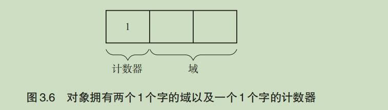

垃圾回收的算法与实现，实现篇目前先做python的，Dalvik和v8的当作个坑后续补
约定

命名规则
变量以及函数都用小写字母表示（例：obj）。常量都用大写字母表示（例：COPIED）。另外，本书采用下划线连接两个及两个以上的单词（例：free_list、update_ptr()、HEAP_SIZE）。
名词
对象：通过应用程序利用的数据的集合，由头(head)和域(field)构成
- 头：对象中保存对象本身信息的部分
- 对象的大小
- 对象的种类
- 域：对象使用者在对象中可访问的部分
- 指针
- 非指针
children(obj) ：获取指向对象 obj 的子对象的指针数组，指针默认指向对象首地址
Mutator： 主要进行两种操作
- 生成对象
- 更新指针
活动对象/非活动对象 ：我们将分配到内存空间中的对象中那些能通过 mutator 引用的对象称为“活动对象”。反过来，把分配到堆中那些不能通过程序引用的对象称为“非活动对象”。也就是说，不能通过程序引用的对象已经没有人搭理了，所以死掉了。死掉的对象（即非活动对象）我们就称为“垃圾”。
死去的对象无法复活，无法通过Mutator找到死掉的对象，GC会清理死掉的对象
分配：在内存空间中分配对象。当 mutator 需要新对象时，就会向分配器（allocator）申请一个大小合适的空间。分配器则在堆的可用空间中找寻满足要求的空间，返回给 mutator。当堆被活动对象占满时，有以下两种选择：
- 销毁至今为止的所有计算结果，输出错误信息
- 扩大堆，分配可用空间
分块：为利用对象而事先准备出来的空间。内存里的各个区块都重复着分块→活动对象→垃圾（非活动对象）→分块→ …… 这样的过程。
根：指向对象的指针的“起点”部分
2 GC标记-清除算法
2.1 什么是GC标记-清除算法
GC 标记 - 清除算法由标记阶段和清除阶段构成。标记阶段是把所有活动对象都做上标记的阶段。清除阶段是把那些没有标记的对象，也就是非活动对象回收的阶段。
2.1.1 标记阶段
内存利用一般是堆，会递归标记指针数组能访问到的对象
将对象头部打上记号表示这是一个活动对象
1 | mark(obj){ |
2.1.2 清除阶段
1 | sweep_phase(){ |
next 的域，我们只在生成空闲链表以及从这个空闲链表中取出分块时才会使用到它。没有必要为各个对象特别准备域，从对象已有的域之中分出来一个就够了。在本章中，next 表示对象（或者分块）最初的域，即 field1。也就是说，给 field1 这个域起个别名叫 next。这跟 C 语言中的联合体（union）的概念相同。
2.1.3 分配
1 | new_obj(size){ |
就是malloc嘛（摊手
pickup_chunk() 函数用于遍历 $free_list，寻找大于等于 size 的分块。它不光会返回和 size 大小相同的分块，还会返回比 size 大的分块。如果它找到和 size 大小相同的分块，则会直接返回该分块；如果它找到比 size 大的分块，则会将其分割成 size 大小的分块和去掉 size 后剩余大小的分块，并把剩余的分块返回空闲链表。
这里再提一下立即适配，延后适配和最佳适配吧，贴一个网上的答案
首次适应算法（First Fit）
算法思想：将空闲分区链以地址递增的顺序连接；在进行内存分配时，从链首开始顺序查找，直到找到一块分区的大小可以满足需求时，按照该作业的大小，从该分区中分配出内存，将剩下的空闲分区仍然链在空闲分区链中。
优点：高址部分的大的空闲分区得到保留，为大作业的内存分配创造了条件；
缺点：（1）每次都是优先利用低址部分的空闲分区，造成低址部分产生大量的外碎片。
（2）每次都是从低址部分查找，使得查找空闲分区的开销增大；
循环首次适应算法（Next Fit）
算法：分配内存时不是从链首进行查找可以分配 内存的空闲分区，而是从上一次分配内存的空闲分区的下一个分区开始查找，直到找到可以为该进程分配内存的空闲分区；
优点：（1）使得空闲分区分布更加均匀；
（2）空闲分区的查找开销小；
缺点：高址部分的大空闲分区被分小，使得大作业进入无法分配内存；
最佳适应算法（Best Fit）
- 算法：将空闲分区链中的空闲分区按照空闲分区由小到大的顺序排序，从而形成空闲分区链。每次从链首进行查找合适的空闲分区为作业分配内存，这样每次找到的空闲分区是和作业大小最接近的，所谓“最佳”。
- 优点：第一次找到的空闲分区是大小最接近待分配内存作业大小的；
- 缺点:产生大量难以利用的外部碎片。
最坏适应算法（Worst Fit）
- 算法：与最佳适应算法刚好相反，将空闲分区链的分区按照从大到小的顺序排序形成空闲分区链，每次查找时只要看第一个空闲分区是否满足即可。
- 优点：效率高，分区查找方便；
- 缺点：当小作业把大空闲分区分小了，那么，大作业就找不到合适的空闲分区。
2.1.4 合并
1 | sweep_phase(){ |
好嘛，free函数（摊手，但是实现的并不好
作者给的多链表的其实也是malloc的简单实现，建议大家码一遍CMU的malloc lab，我就不多写了
本章的几个优化方法，跟malloc lab的提分技巧大同小异，我就不做笔记了
3 引用计数法
GC 原本是一种“释放怎么都无法被引用的对象的机制”。那么人们自然而然地就会想到，可以让所有对象事先记录下“有多少程序引用自己”。让各对象知道自己的“人气指数”，从而让没有人气的对象自己消失。
感觉好有意思~
3.1 引用计数的算法

new_obj()函数
1 | new_obj(size){ |
在这里，pickup_chunk() 函数的用法也大致与在 GC 标记 - 清除算法中的用法相同。不过这次当 pickup_chunk() 函数返回 NULL 时，分配就失败了。
在引用计数法中，除了连接到空闲链表的对象，其他所有对象都是活动对象。也就是说，在 pickup_chunk() 函数返回 NULL 那一刻，堆中就没有合适大小的分块了。
update_ptr()函数
update_ptr() 函数用于更新指针 ptr，使其指向对象 obj，同时进行计数器值的增减。
1 | update_ptr(ptr, obj){ |
这里有一个点要注意，就是inc_ref_cnt() 和 dec_ref_cnt() 的调用顺序，这一点是为了处理 * ptr 和 obj 是同一对象时的情况。如果按照先 dec_ref_cnt() 后 inc_ref_cnt() 函数的顺序调用，* ptr 和 obj 又是同一对象的话，执行 dec_ref_cnt(*ptr) 时 *ptr 的计数器的值就有可能变为 0 而被回收。这样一来，下面再想执行 inc_ref_cnt(obj) 时 obj 早就被回收了，可能会引发重大的 BUG。因此我们要通过先对 obj 的计数器进行增量操作来回避这种 BUG。
这里有个卡我的点，记录一下，就是我不大明白这个update_ptr为什么要进行这种将对象赋值给指针的操作。看了看书，知道，这个是改变指针指向对象的操作，如果一个指向正在使用中的对象的指针被改变了，那么这个对象一定被放弃了。如图中的B：

“致命”缺点
这个算法，无法回收相互引用的对象
example：
1 | class Person{ |
为两个对象互相引用，所以各对象的计数器的值都是 1
hhh，顺便说句题外话，日本人的土名也挺土的（
如何改进？
3.2 延迟引用计数法
简单来说，就是减轻计数器的增减处理，引入一个ZCT表
所谓ZCT表就是会记录下计数器值在dec_ref_cnt()函数作用下为0的对象。所以应该改进一下该函数。
dec_ref_cnt()函数
1 | dec_ref_cnt(obj){ |
逻辑就那样
new_obj()函数
1 | new_obj(size){ |
scan_zct()函数
1 | scan_zct(){ |
delete()函数
1 | delete(obj){ |
这个方法…让我想起了计算机科学的万能法宝——中间层
3.3 Sticky引用计数法
3.7 部分标记-清除算法
3.7.1 约定
对象会被涂成4种不同的颜色来进行处理
- 黑(BLACK) : 绝对不是垃圾的对象（对象产生时的初始颜色）
- 白（WHITE）：绝对是垃圾的对象
- 灰（GRAY）：搜索完毕的对象
- 阴影（HATCH）：可能是循环垃圾的对象
3.7.2 dec_ref_cnt()函数
接下来，通过 mutator 删除由根到对象 A 的引用。这个引用是由 update_ptr() 函数产生的。跟以往的引用计数法一样，为了将对象 A 的计数器减量，在 update_ptr() 函数中调用 dec_ref_cnt() 函数。
1 | dec_ref_cnt(obj){ |
当 obj 的颜色不是阴影的时候，算法会将其涂上阴影并追加到队列中。
3.7.3 new_obj()函数
1 | new_obj(size){ |
当可以分配时，对象就会被涂回黑色。当分配无法顺利进行的时候，程序会调查队列是否为空。当队列不为空时，程序会通过 scan_hatch_queue() 函数搜索队列，分配分块。scan_hatch_queue() 函数执行完毕后，程序会递归地调用 new_obj() 函数再次尝试分配。
3.7.4 scan_hatch_queue()函数
scan_hatch_queue() 函数在找到阴影对象前会一直从队列中取出对象。
1 | scan_hatch_queue(){ |
如果取出的对象 obj 被涂上了阴影，程序就会将 obj 作为参数，依次调用 paint_gray()函数、scan_gray() 函数和 collect_white() 函数（第 4 行到第 6 行），从而通过这些函数找出循环引用的垃圾，将其回收。
当 obj 没有被涂上阴影时，就意味着 obj 没有形成循环引用。此时程序对 obj 不会进行任何操作，而是再次调用 scan_hatch_queue() 函数。
3.7.5 paint_gray()函数
程序会把黑色或者阴影对象涂成灰色，对子对象进行计数器减量操作，并调用 paint_gray() 函数。把对象涂成灰色是为了防止程序重复搜索。
1 | paint_gray(obj){ |

首先，在 (a) 中 A 被涂成了灰色。虽然程序对计数器执行了减量操作，但并不是对 A，而是对 B 的计数器进行了减量操作。下面在 (b) 中 B 也被涂成了灰色，不过这时程序并没有对 B 进行减量操作，而是对 C 进行了减量操作。在 (c) 中 C 被涂成灰色时，程序对 A 和 F 的计数器进行了减量操作。这样一来，A、B、C 的循环垃圾的计数器值都变成了 0。(d) 是 A、B、C、F 各个对象搜索结束后的样子。
3.7.6 scan_gray()函数
1 | scan_gray(obj){ |
打个比方，在图 3.11 这种情况下，程序会从对象 A 开始搜索，但是搜索的只有灰色对象。如果对象的计数器值为 0，程序就会把这个对象涂成白色，再查找这个对象的子对象。也就是说，A、B、C 都会被涂成白色。计数器值大于 0 的对象会被 paint_black() 函数处理。
3.7.7 paint_black()函数
1 | paint_black(obj){ |
3.7.8 collect_white()函数
回收函数
1 | collect_white(obj){ |
3.7.9 限定搜索对象
部分标记 - 清除算法的优点，就是把要搜索的对象限定在阴影对象及其子对象，也就是“可能是循环垃圾的对象群”中。

部分标记 - 清除算法中用 dec_ref_cnt() 函数来检查这个值。如果对象的计数器值减量后不为 0，说明这个对象可能是循环引用的一份子。这时会先让这个对象连接到队列，以方便之后搜索它。
4 GC复制算法
简单来说就是复制能用的对象到另一块区域，然后把原区域全部清空。
copy函数
1 | copying(){ |
$free 是指示分块开头的变量。首先在第 2 行将 $free 设置在 To 空间的开头，然后在第 3 行、第 4 行复制能从根引用的对象。copy() 函数将作为参数传递的对象 *r 复制的同时，也将其子对象进行递归复制。复制结束后返回指针，这里返回的指针指向的是 *r 所在的新空间的对象。
在 GC 复制算法中，在 GC 结束时，原空间的对象会作为垃圾被回收。因此，由根指向原空间对象的指针也会被重写成指向返回值的新对象的指针。
4.1 GC复制算法是什么
4.1.1 copy()函数
python的垃圾回收机制
ok终于来到重头戏，让我康康python的GC机制(标记清除法)到底是怎么回事吧
下载了跟书上一样python3.0.1的源代码（有时候研究实现机制并不需要最新版的
10.1 对象管理
| 结构体名 | 对应的内置数据类型 |
|---|---|
| PyListObject | 列表型 |
| PyTupleObject | 元组型 |
| PyDictObject | 字典型 |
| PyFloatObject | 浮点型 |
| PyLongObject | 长整型 |
直接康源码
浮点型
1 | Include/floatobject.h |
PyObject_HEAD 定义如下。
1 | Include/object.h |
元组型
1 | Include/tupleobject.h |
宏 PyObject_VAR_HEAD 的定义如下。
1 | Include/object.h |
看上去好像是定义了PyVarObject型的成员，但是还是定义了PyObject
那么这里就有一个问题，PyObject到底什么内容，上源码
1 | Include/object.h |
ob_refcnt成员负责维持引用计数
10.2 Python的内存分配器
python的分配器很有意思，它不是简单的malloc，它是分层的

如果生成一个字典对象，则会发生如下过程
1 | PyDict_New() ——3层 |
10.3 第0层 通用的基础分配器
以 Linux 为例，第 0 层指的就是 glibc 的 malloc() 这样的分配器，是对 Linux 等 OS 申请内存的部分。
Python 中并不是在生成所有对象时都调用 malloc()，而是根据要分配的内存大小来改变分配的方法。申请的内存大小如果大于 256 字节，就老实地调用 malloc()；如果小于等于 256 字节，就要轮到第 1 层和第 2 层出场了。
1 | void * |
10.4 第1层 Python低级内存分配器
假设我们有这样一段代码
1 | for x in range(100): |
这段代码会使用大量一次性的小字符串，如果调用malloc()和free()这显然是我们无法接受的。
所以第1层和第2层的内存分配器会进行处理
10.4.1 内存结构
根据所管理的内存空间的作用和大小不同，划分为三级结构从大到小为arena、pool、block，三者为包含关系。
10.4.2 arena
1 | struct arena_object { |
arena的大小固定为256k字节
这里有个有趣的点，arena_object结构体不仅保存了malloc后arena的地址，还保存了开头pool的地址，按照常理来说，这两个地址应该是一样的啊？
arenas数组管理arena_object
1 | /* 将arena_object作为元素的数组 */ |
然后让我们来看看uptr到底是啥吧，宏定义如下：
1 | typedef uintptr_t Py_uintptr_t; |
简单来说，这个类型是整数型的一个别名，用来存放指针，会根据c指针的大小而变成4字节或者8字节，防止溢出。
10.4.3 pool
pool的大小固定在4K字节，因为对几乎所有OS而言，虚拟内存的页面大小都是4K
这样的话，就能让OS以pool来管理内存
所以说~arena和第一个pool的地址不一定相同，因为pool开头地址需要进行4k字节的倍数进行对齐。
看一哈结构体
1 | struct pool_header { |
10.4.4 new_arena()
先整体看一下new_arena()的大体部分
1 | static struct arena_object* |
这是源码：
1 | static struct arena_object* |

hhh,这里我要记录一个点，被自己蠢到
1 | a = b ? b << 1 : 16; |
这段代码的意思是b如果为0的话a=16，如果不为0的话，a=b*2，这里a=b的判断是b的值(胡言乱语中)
10.4.5 usable_arenas和unused_arena_objects
直接看源码吧~
1 | unused_arena_objects |
在没有能用的 arena 时，我们使用 unused_arena_objects。如果在分配时没有 arena，就从这个链表中取出一个 arena_object，分配新的 arena。
在没有能用的 pool 时，则使用 usable_arenas。如果在分配时没有 pool，就从这个链表中取出 arena_object，从分配到的 arena 里取出一个 pool。
unused_arena_objects 是单向链表，usable_arenas 是双向链表。
当我们采用 unused_arena_objects 时，只能使用结构体 arena_object 的成员 nextarena；而当我们采用 usable_arenas 时，则可以使用成员 nextarena 和成员 prevarena。
10.5 第2层 Python对象分配器
第二层管理的是block
10.5.1 block
有几个比较有意思的点记录一下
block的大小一定是8的倍数，这点毋庸置疑，相应的地址也一定是8的倍数(因为pool是按照4K字节来对齐的)
为什么要将 block 按 8 的倍数对齐呢？这是因为这样一来 block 的地址在 64 位 CPU 和32 位 CPU 中都不会出现问题。
分配的字节数会根据申请的字节数自动调节至最接近的8字节的倍数(高于)。
10.5.2 usedpools
Python 的分配器采用 Best - fit 的分配战略，即极力让分配的 block 的大小接近申请的大小。
搜索 pool 的过程必须是高速的。因为在每次分配时都会进行这项搜索处理。
秘诀在于usedpools中

10.5.4 block的状态管理
block只有一下三种状态
- 已经分配
- 使用完毕
- 未使用
所有使用完毕的 block 都会被连接到一个叫作 freeblock 的空闲链表进行管理。block是在释放的时候被连接到空闲链表的。因为使用完毕的 block 肯定经过了使用→释放的流程，所以释放时空闲链表开头的地址就会被直接写入作为释放对象的 block 内。之后我们将释放完毕的 block 的地址存入 freeblock 中。这个 freeblock 是由 pool_header 定义的。我们将freeblock 放在开头，形成 block 的空闲链表。
未使用的block直接通过偏移量分配